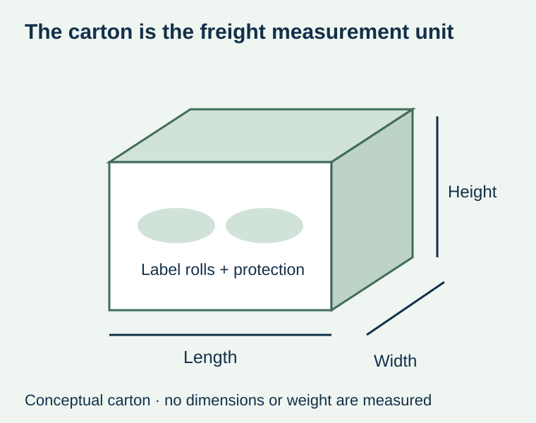
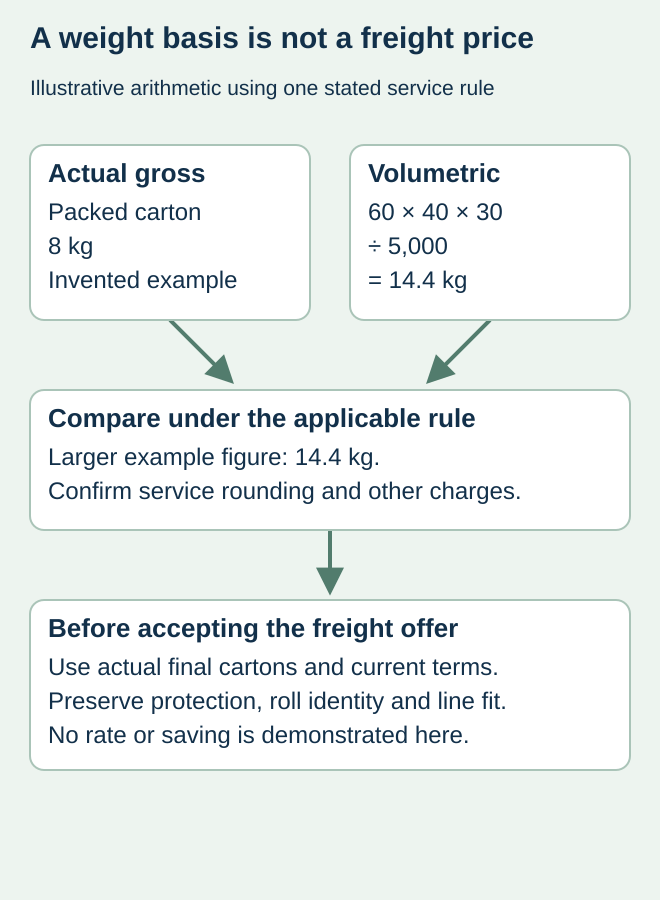

A food brand orders short rolls for several flavors. The label price is clear, but freight rises after the supplier packs each artwork separately with protective spacing. The rolls may be light relative to their cartons. Comparing only the net weight of the labels misses the input the courier may actually bill.
Obtain carton-by-carton outer dimensions and gross weights, then apply the actual service’s chargeable-weight rule. Compare the final packed proposal rather than an estimate based on bare rolls. Keep the chosen protection and delivery scope visible so a smaller box is not mistaken for an equivalent shipment.


Actual weight and volumetric weight answer different questions
DHL Express’s volumetric-weight explanation describes actual weight and volumetric weight. Its stated example rule uses length × width × height in centimeters divided by 5,000, with the higher weight determining the charging basis. Confirm the actual carrier, service, country and current quotation; do not apply that divisor or any rounding rule to every freight offer.
Gross weight includes the carton and packing materials. Net label weight is a different quantity. Record which one appears on the supplier’s estimate, and ask whether final carrier measurement can change the quoted basis. A dimensional estimate does not establish an actual freight price.
Work one clearly labeled arithmetic example
For illustration only, suppose one packed carton measures 60 × 40 × 30 cm and has a gross weight of 8 kg. Under the stated divisor of 5,000, its volumetric figure is 14.4 kg. The larger figure is 14.4 kg before any applicable carrier rounding or additional rules. These are invented planning inputs, not a ZFU shipment, rate or promise of savings.
The example explains why an apparently light order can have a higher weight basis. It does not show that the carton is unnecessarily large. Its dimensions may reflect roll diameter, separation by SKU or protection that the shipment actually needs. Obtain an alternate packing proposal before changing the brief.


| Carton record | Ask the supplier to identify | Comparison error to avoid |
|---|---|---|
| Packing unit | Carton count and contents by artwork/component | Treating one carton estimate as the entire order |
| Dimensions | Final outside length, width and height with units | Using internal dimensions or bare-roll diameter |
| Weight | Gross packed weight of each carton | Using label-only net weight |
| Service rule | Carrier/service, divisor, rounding and quotation validity | Borrowing another service’s assumptions |
| Protection | Roll orientation, separators and moisture/edge protection | Removing agreed protection to produce a lower number |
Compare packing alternatives without losing usable stock
If the supplier can offer two packing arrangements, compare both using their own final dimensions and weights. A larger roll format may reduce the number of cores but conflict with the applicator’s maximum diameter. Combining artworks may simplify cartons but still requires reliable roll and carton identity. Confirm these consequences before choosing the freight option.
A hypothetical juice buyer might accept fewer cartons after reviewing a revised packing drawing. It should not infer a cost reduction from carton count alone: dimensions, gross weight and the carrier’s rating method can all change. Ask for the actual revised offer and keep any unresolved charge open.
Keep freight arithmetic separate from delivery responsibility
The calculation does not decide duties, import clearance, insurance, surcharges or who carries the relevant risk. Keep the delivery basis with the quote and use the quote comparison guide to prevent omitted charges or double counting. The roll-protection guide covers the condition and identity of material across packing handoffs.
Before booking, preserve the accepted packing revision and the supplier’s confirmed freight scope. At dispatch, retain the actual carton measurements and packing list where available. A carrier adjustment can then be investigated against identified records rather than an old message that only said “about eight kilograms.”
Discuss the unresolved label requirement
Send quantities by artwork, required roll format, destination/postcode and the actual packed-carton dimensions and weights if available. Ask which carrier and service the freight proposal uses. Prepare a label specification inquiry. The contact page opens an email draft and lists email or WhatsApp for attachments. Supply, proof options, testing, pricing and timing require project confirmation.